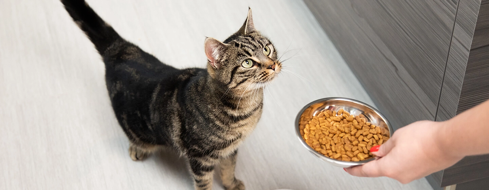
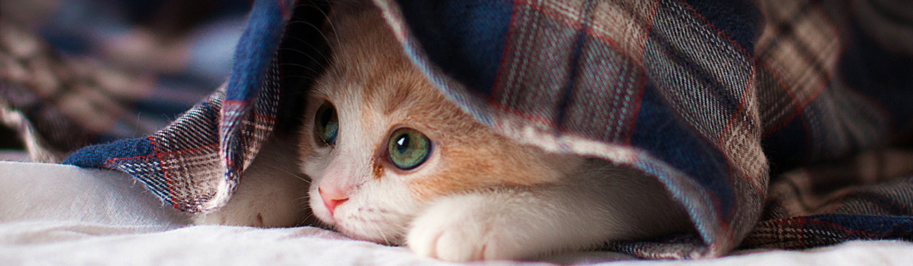
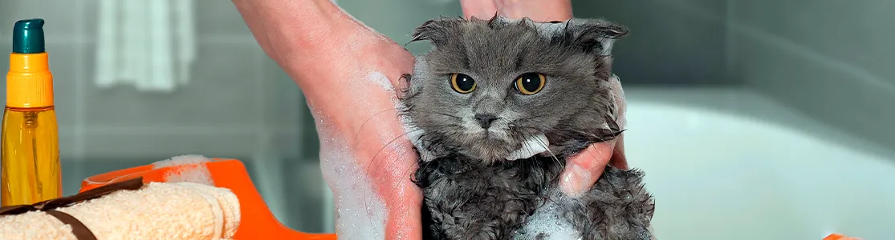
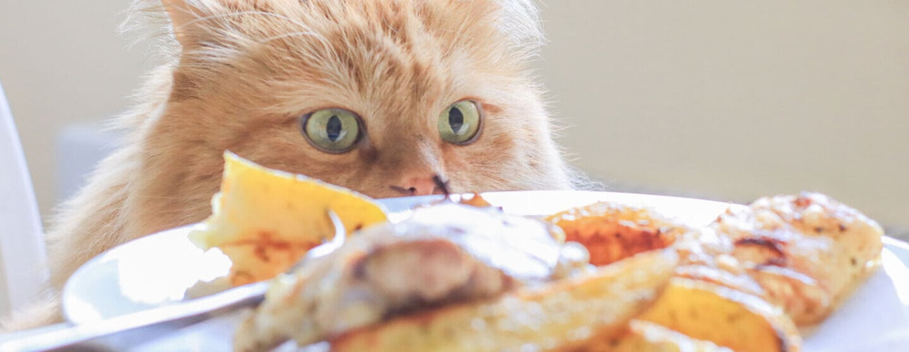

Todos queremos que nuestros gatos estén sanos y fuertes. Para ello, la nutrición es el pilar fundamental. Para poder aportarle los nutrientes necesarios hay que tener en cuenta...
Entretenimiento para gatos

Independientemente de la personalidad de tu gato, a todos les encanta jugar desde que son gatitos, pero, aunque al crecer dejen de ser tan curiosos, es muy importante mantener activo a tu gato para beneficio de su salud.
¿Cómo asear a tu gato adecuadamente?

La limpieza de nuestros queridos felinos puede ser un desafío, especialmente cuando se trata de bañarlos. Muchos gatos no disfrutan estar sumergidos en agua, lo que puede convertir el proceso en una tarea...
¿Qué no darle a tu gato?

Cuando se trata de tu gato, quieres asegurarte de que tiene el mejor tipo de alimento para sus necesidades nutricionales. De vez en cuando, puedes tener la tentación de darle restos de la mesa y golosinas especiales...